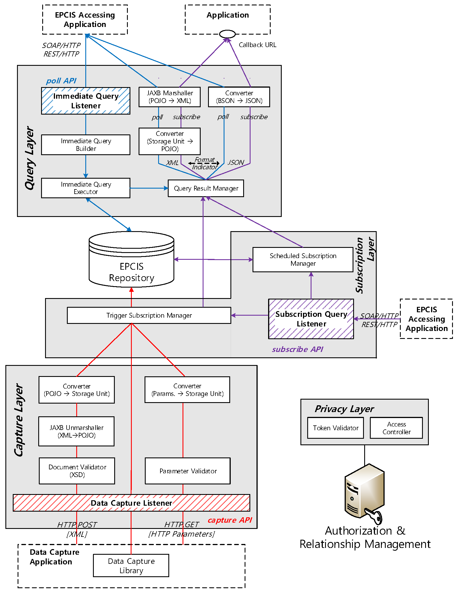

Electronic Product Code Information Service (EPCIS) enables to capture and share visibility event and masterdata depicting lifecycle of everyday-objects. With EPCIS, event producer generates and sends events complying with EPCIS Document XML schema into EPCIS Repository Then, these events can be globally shared with given queries.
Oliot EPCIS is a Java Web Service implementing the EPCIS standard in terms of its data type and interface standards and additionally supports additional features to broaden its scope from RFID to the Internet of Things.
